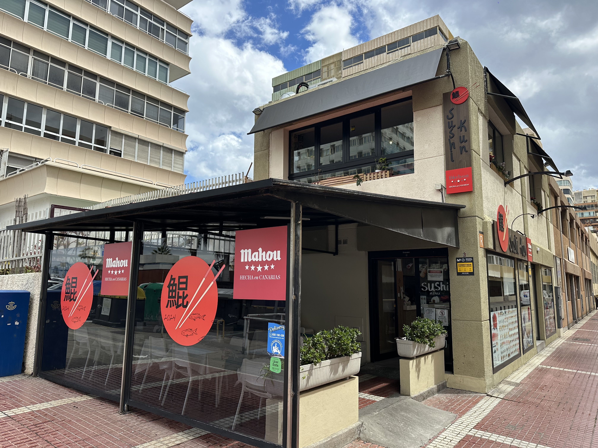
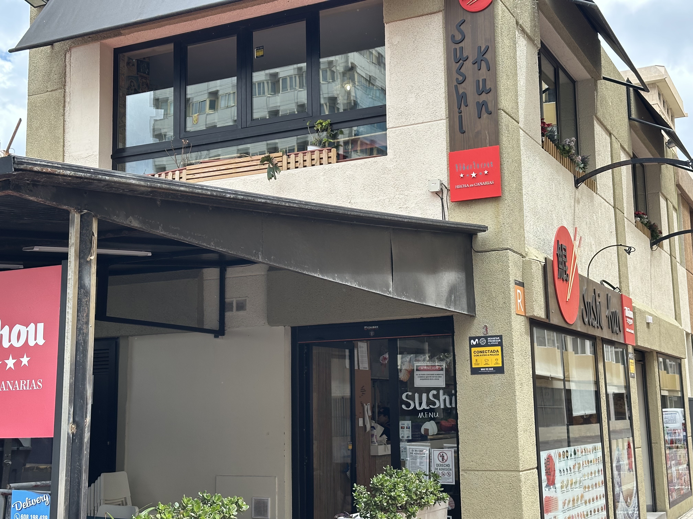
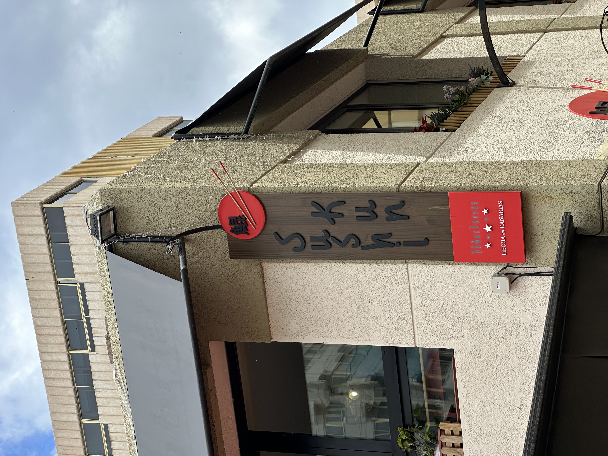
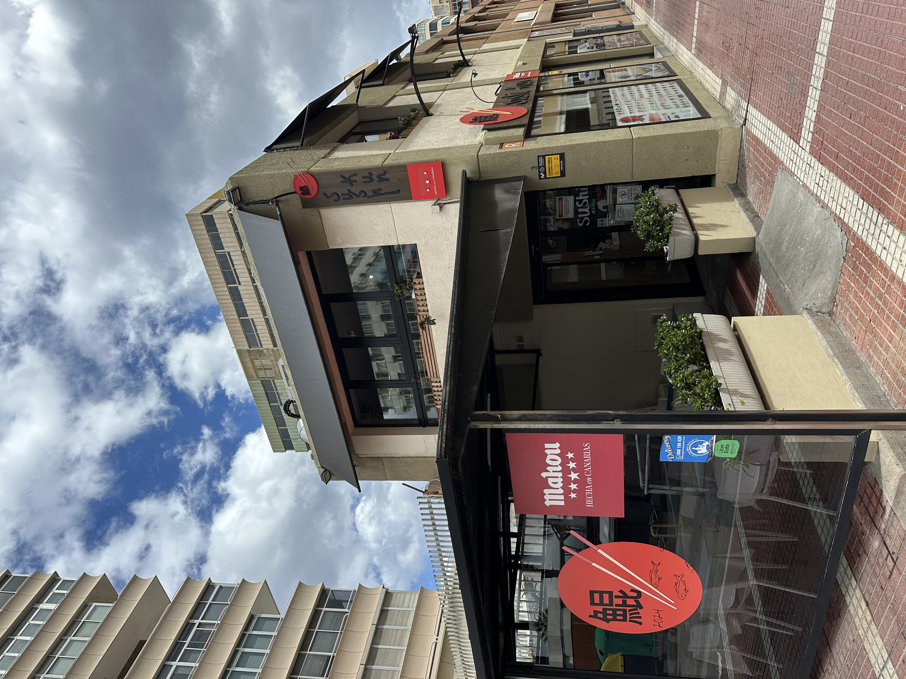
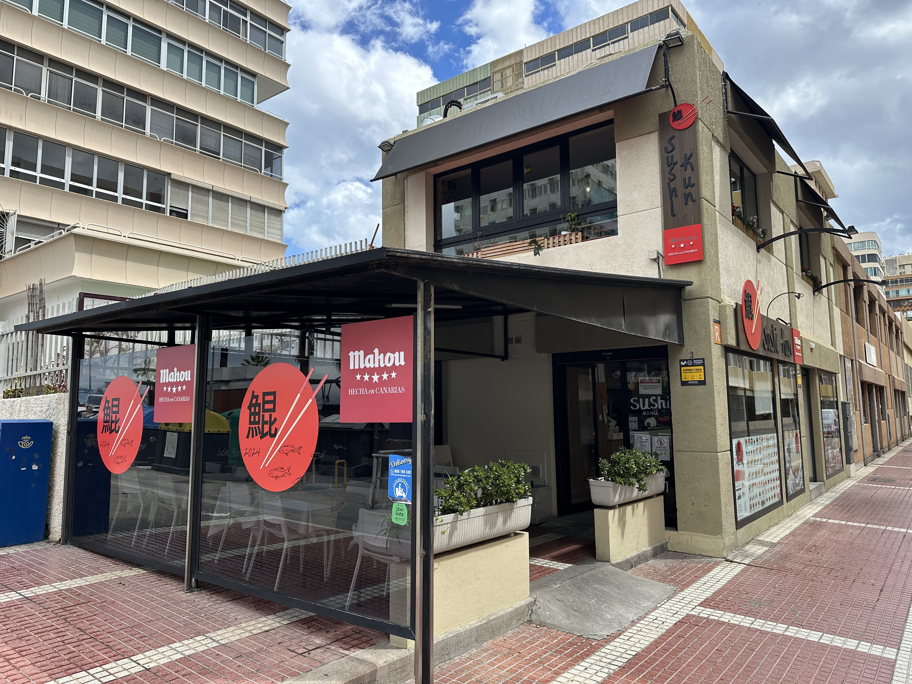

Cocina japonesa autentica en Las Palmas
Calle Carvajal, 1 · Las Palmas de Gran Canaria
Descubre nuestra carta

Sushi Kun nace de la pasion por la cocina japonesa mas autentica. Nuestro restaurante, ubicado en la Calle Carvajal, te transporta a Japon desde el momento en que cruzas la puerta. Paredes decoradas con iconicos mangas, un ambiente que fusiona tradicion oriental con la calidez canaria, y platos elaborados con los ingredientes mas frescos del Atlantico.
Cada roll, cada nigiri y cada pieza de sashimi cuentan la historia de una tradicion culinaria milenaria, reinterpretada con productos locales de primera calidad.

Rolls creativos con pescado fresco del Atlantico y combinaciones unicas de sabores

Cortes de primera seleccion servidos en su forma mas pura, celebrando la frescura del producto

Empanadillas japonesas rellenas y crujientes, cocinadas a la plancha con el toque perfecto

Piezas de arroz prensado coronadas con el pescado mas fresco, la esencia del sushi tradicional

Sumergete en un ambiente donde cada detalle cuenta. Paredes cubiertas con paneles de manga como One Piece, iluminacion calida de farolillos, y la energia de una izakaya tradicional japonesa fusionada con el espiritu canario.
Disfruta de nuestro acogedor comedor interior y la terraza exterior
Te lo llevamos a casa a traves de tus plataformas favoritas
Recoge tu pedido en local y disfruta de un 10% de descuento
Llama: 928 171 672
Calle Carvajal, 1, 35004
Las Palmas de Gran Canaria
928 171 672
Lunes a Domingo: 12:00 - 16:30 | 20:00 - 00:00
Llamanos o visitanos en Calle Carvajal, 1
928 171 672